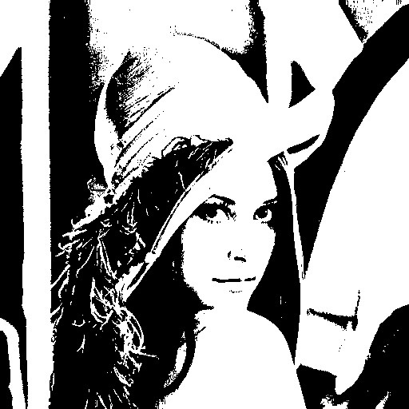

--- class: left, top ## Images as Arrays <img style="width:80%" src="../../images/pixels.png"> --- class: left, top ### RGB Images -- <img style="width:70%" src="../../images/lenna_rgb.jpg"> --- class: left, top ### Scaler Images -- --- class: left, top ### Binary Images --  --- class: left, top #### Converting from RGB to Grayscale -- <img style="width:80%" src="../../images/sphinx_rgb.png"> --- class: left, top #### Cont'd For each RGB pixel, we compute: -- $$ I = \big[0.299, 0.587, 0.114\big] . \big[R, G, B\big]^T$$ -- ```python def rgb2gray(rgb_image): return np.dot(rgb_image[...,:3], [0.299, 0.587, 0.114]) ``` --- class:left, top #### Results -- <img style="width:80%" src="../../images/sphinx_gray.png"> --- class:left, top ### Converting from Grayscale to Binary Image #### Thresholding -- ```python def binarize( gray_image , threshold ): threshold = np.max( gray_image ) * threshold return 1 * ( gray_image > threshold ) ``` --- class: left, top #### Results -- <img style="width:80%" src="../../images/sphinx_bin.png"> --- class: left, top ### Hyperspectral Images -- Pixels in Hyperspectral images consists of many channels. -- <img style="width:100%" src="../../images/stones_hsi.png"> --- class:left, top ### Cont'd <img style="width:100%" src="../../images/surve_hsi.png"> --- class:left, top ## Mean and Variance -- ```python print( np.mean( image )) print( np.std( image )) ``` --- class: left, top ## Profiles -- <img style="width:80%" src="../../images/pegion_profile.png"> --- class: left, top ## Edges ### First-Order Derivatives -- $$ \begin{bmatrix} \frac{\partial f}{\partial x} \\ \frac{\partial f}{\partial y} \end{bmatrix} $$ -- where: $$\textstyle\frac{\partial f}{\partial x}$$ is the derivative with respect to x (gradient in the x direction) $$\textstyle\frac{\partial f}{\partial y}$$ is the derivative with respect to y (gradient in the y direction). --- class: left, top #### Results -- <img style="width:80%" src="../../images/cat_gradient.png"> --- class: left, top ## Computer Vision Opportunities in Egypt ### Internship at [{Affectiva}](https://www.affectiva.com) -- <img style="width:80%" src="../../images/affectiva.png"> --- class: left, top [{Internship 1: Machine Learning}](https://www.affectiva.com/machine-learning-intern/) -- [{Internship 2: Empath Summer Internship}](https://www.affectiva.com/empath-high-school-summer-internship-program-at-affectiva/) --- class: left, top A very interesting talk by *Rana Elkaliouby* about Affectiva: <div style="max-width:854px"><div style="position:relative;height:0;padding-bottom:56.25%"><iframe src="https://embed.ted.com/talks/lang/ar/rana_el_kaliouby_this_app_knows_how_you_feel_from_the_look_on_your_face" width="854" height="480" style="position:absolute;left:0;top:0;width:100%;height:100%" frameborder="0" scrolling="no" allowfullscreen></iframe></div></div> --- class: left, top ### 360imaging in Egypt <img style="width:80%" src="../../images/360imaging.png"> [{Website}](http://www.360imaging.com/) -- * Planned Dental Surgeries. * They demand highly skilled C++ developers. * Computer Vision background is a plus * They offer opportunities through Wuzzuf. --- class: left, top ### Egyptian AI & Big Data Geeks #### Follow the latest news, technologies, and vacancies in Egypt [{Egyptian AI & Big Data Geeks}](https://www.facebook.com/groups/big.data.egypt/?hc_ref=ARRdEaEGxIrwkMjEnvNxD81ZxbGlFmE6i92Dd4Vdw0vboAUOg05qsCcMkLJNv3-28OE) Also visit the [{**pinned** post}](https://www.facebook.com/groups/big.data.egypt/permalink/1762260707366456/) for lots of info about many related topics. --- class: left, top ## Resources * [{Awsome Computer Vision}](https://github.com/jbhuang0604/awesome-computer-vision), **+5K** starts. * [{Awesome Machine Learning}](https://github.com/josephmisiti/awesome-machine-learning), **30K** starts. --- class: left, top ## Interesting Application: Artistic Flavor ### Neural Doodle [Neural Doodle](https://github.com/alexjc/neural-doodle) <img style="width:100%" src="../../images/doodle.png">